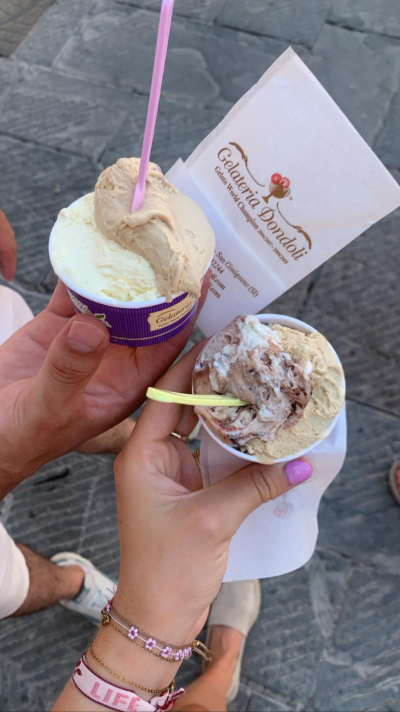
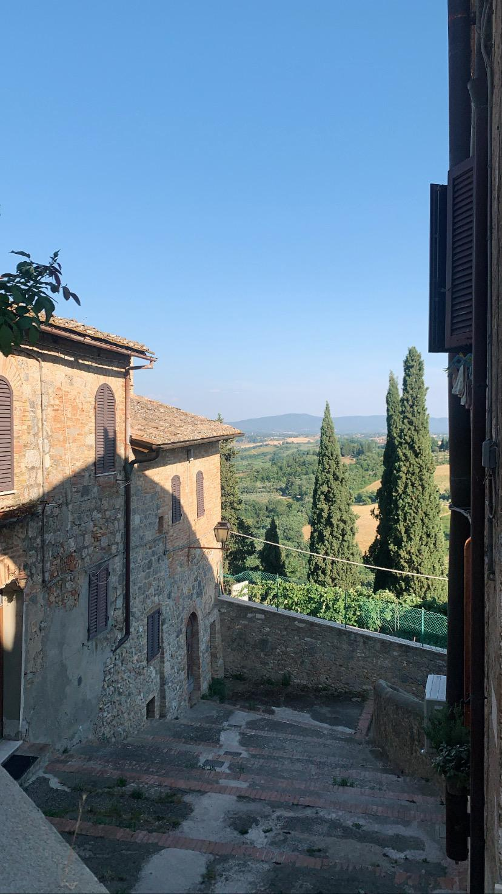

Vakantie in Toscane 2023
Foto collage

Afgelopen zomer ben ik met mijn ouders en mijn zussen op vakantie geweest naar het prachtige toscane. Op deze website ga je kunnen lezen over een paar van de steden die ik heb bezocht tijdens mijn vakantie . Naast prachtige foto's van de mooie steden van toscane, kan je algemene informatie en geschiedenis van de steden vinden. Tijdens mijn vakantie heb ik meerdere steden bezocht, maar ik ga maar een drietal daarvan benoemen. Dit Zijn: Milaan, Lucca en Pisa.
